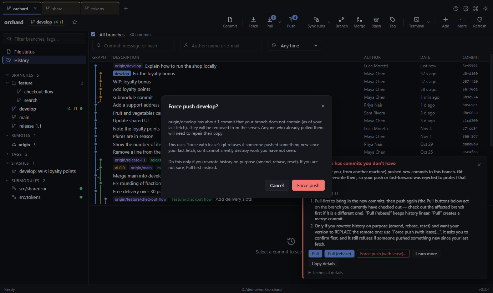

13. When something goes wrong


Whenever an operation fails, the app shows a red panel with:
- a plain-language title and explanation of why it happened,
- How to fix it — numbered steps,
- one-click action buttons where possible (Pull, Pull (rebase), Stash my changes…, Show changes, Remove lock file),
- Technical details (Git's exact output — expand it when asking for help), Copy details, and Learn more, which opens this page of the guide.
Errors stay on screen until you dismiss them (✕, or Dismiss all), and a panel closes itself once you use its fix.
Common situations:
| You see … | Meaning | Fix |
|---|---|---|
| Git is locked by another process | A .lock file exists — another Git tool is busy, or one crashed |
Wait/close other tools; if none, Remove lock file |
| The remote has commits you don't have | Push rejected (non-fast-forward) | Pull (or Pull (rebase)), then push again |
| Git could not sign in to the remote | Wrong/expired credentials or SSH key | See Signing in |
| Could not reach the remote server | Offline, VPN or proxy | Check connection; retry |
| A branch merged on GitHub/GitLab still looks unmerged, or a deleted branch is still listed | Treeline has not fetched since the change. It checks every 2 minutes unless you changed or turned it off in Settings → Background fetch; offline or missing sign-in stops it silently | Press Fetch now; if that fails, read the error (see Signing in) |
| Uncommitted changes are in the way | A checkout/merge would overwrite your edits | Stash my changes…, repeat, then pop |
| The changes conflict and need your decision | Merge/rebase conflict | Resolve in File status (section 10) |
| Git doesn't know who you are | No user.name/user.email |
Run the two git config commands in section 1 |
| A Git hook stopped the operation | The repo's pre-commit/pre-push check failed | Read the technical details, fix, retry |
| This branch isn't linked to a remote branch yet | No upstream | Push with Track this remote branch |
| Git is not installed (or not on PATH) | The app could not start Git — programs opened from the Start menu or Finder do not always see your terminal's PATH |
Locate Git… and pick git.exe, or install Git (section 1) |
| A file or folder is in use or protected | Another program (editor, antivirus, OneDrive) holds a file | Close it; move the repo out of OneDrive |
| That folder has not been opened in Treeline | Treeline only works on folders you chose or that are inside one | Use Open repository… (Ctrl+O) to pick it (section 2) |
| This repository can run programs | The folder's own settings or hooks can make Git run programs | Press Open anyway only if you trust where the folder came from (section 2) |
| Your Git is older than the July 2025 security fixes | An old Git has known clone and submodule bugs | Update Git (section 1) |
| '…' is not a valid branch, tag, remote or commit name | A name that starts with - would be read by Git as an option |
Choose a different name |
| Merged, but changes dropped (Merge to many) | A branch kept its own version of a file | Revert that merge commit and merge again (section 10) |
If the same problem keeps appearing, press Refresh (Ctrl+R), and try the command in the Terminal to see Git's
full output.